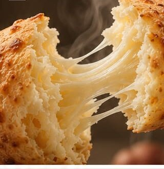

Pan de queso, a la paraguaya.
La chipa es un panecillo de almidón de mandioca y queso que se come en Paraguay desde hace siglos. Sin harina de trigo, sin levadura, sin trucos: se hincha en el horno y queda dorada por fuera y elástica por dentro.
Nosotros la hacemos con la receta de siempre, a mano, en Andorra. Y la congelamos en el momento justo para que la hornees tú y la comas como tiene que comerse: recién salida del horno.
- Ingredientes naturales
- Sin conservantes
- Hecho en Andorra
